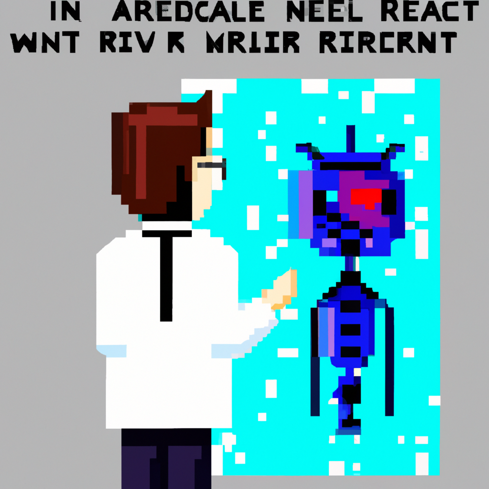

Why AI will never replace the radiologist
In the recent years, Artificial Intelligence (AI) has been making a big impact in the medical world, especially when it comes to radiology. The promise of AI-aided diagnosis is a powerful one: AI algorithms can quickly and accurately detect and diagnose medical conditions and diseases, potentially freeing up much-needed human resources and reducing healthcare costs.
But, while AI has made great strides in medical imaging, there is still a long way to go before it can completely replace the radiologist. AI algorithms, although powerful, can only scan and detect abnormalities in images. They cannot interpret and diagnose those abnormalities correctly and accurately, and it is here that the human element is essential.
While AI algorithms are able to detect and identify certain medical abnormalities, the majority of them require a high level of expertise to interpret correctly. AI algorithms are not yet able to think like a human radiologist and understand the nuances of a medical condition. For example, AI can detect a tumor in an image, but it cannot determine whether it is benign or malignant. This requires a human radiologist to study the image and interpret the findings, and a skilled radiologist has the experience and knowledge to make an informed diagnosis.
In addition, AI algorithms are still prone to errors. AI systems may sometimes miss certain abnormalities, or misdiagnose them, which could lead to incorrect treatments. This is why radiologists must always review AI-aided diagnoses and double-check them before making a final judgement.
Overall, AI is a powerful tool that can help radiologists in their work, but it will never be able to completely replace them. AI algorithms are still limited in their ability to interpret and diagnose medical conditions accurately, and this is something that only a human radiologist can do. Therefore, radiologists will continue to play a very important role in the medical world.